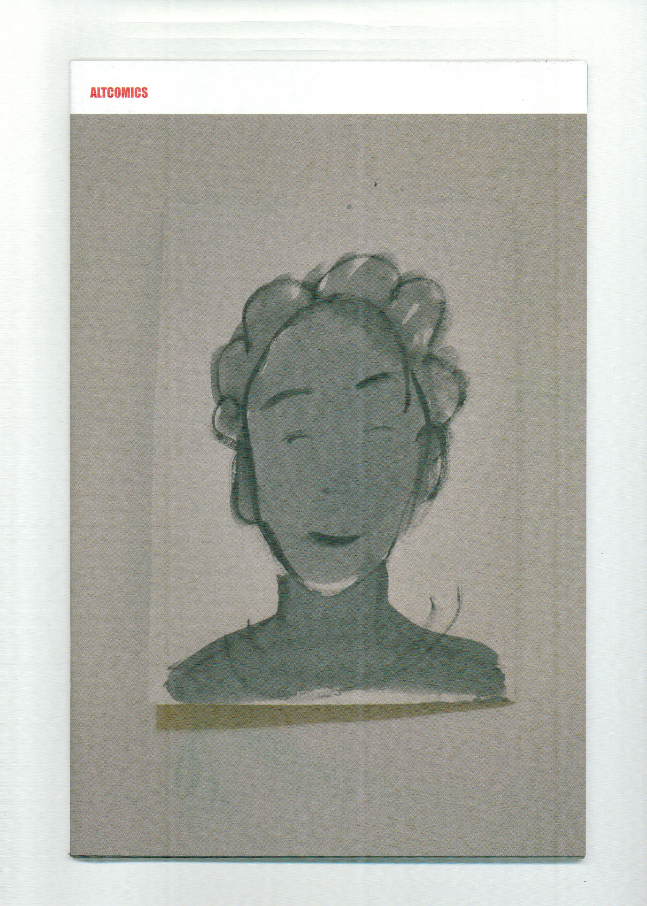

Altcomics 7

$7, 40 pages, 6 by 10 inches, 2dcloud, 2025
"This anthology will be one of the best you've read all year, though it doesn't alert you to this fact in its production or vibe...everything is very understated here. Larmee edits this perfectly though, bringing in Katie Lane, Claire Gunther, Matthew Thurber, Jason Overby and Frank Santoro to show the true cutting edge of comics: artists reinventing the form to explore thoughts, ideas and feelings rather than grafting naturalistic fiction onto the comics form. It's an incredible mix of artists and the entry fee is cheap, this anthology is a minor miracle." Austin EnglishBUY
